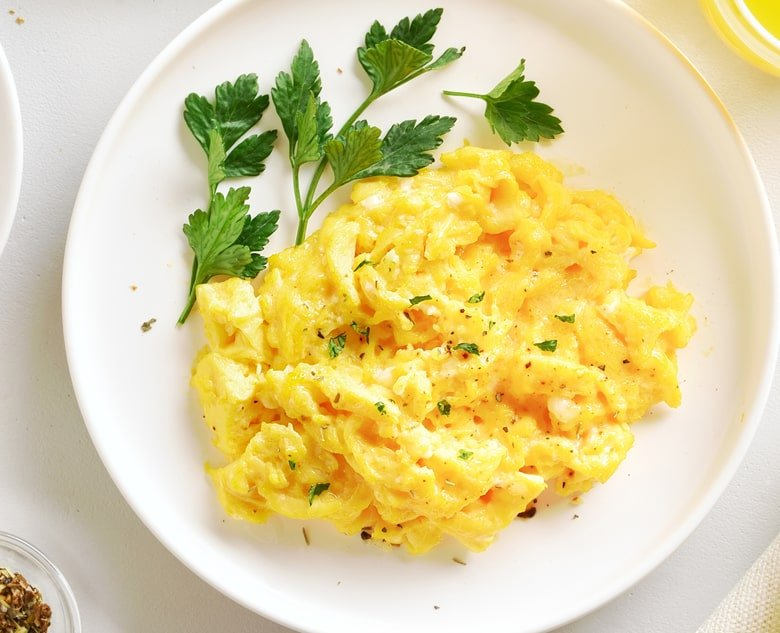

Scrambled eggs

Description
Some hot ass scrambled eggs, discovered by yours truly
Ingredients
- 4 large white eggs
- 200ml liquid egg whites
- 1 bag spinach
- 1/4 teaspoon salt
- 1/2 tablespoon butter
- 1 tablespoon extra virgin olive oil
- (optional) Tabasco hotsauce
Steps
- Whisk eggs until light and fluffy; add egg whites and whisk again until it returns to that same fluffy, homogenous consistency.
- Heat EVOO in saaucepan at medium-high to high heat.
- Cook spinach until slightly wilted.
- Pour egg solution into saucepan, reduce heat to medium to medium-high.
- Add butter to saucepan.
- Cook until sufficiently scrambled. Leave leeway for aftercooking.
- Remove pan from heat, add salt and Tabasco if you desire.
- Plate and enjoy.
return home